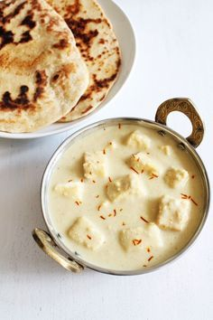

Mughlai cuisine is known for distinctive aromatic and rich flavors. Soft paneer pieces are added into rich, creamy white gravy.

Ingredients
200 gms Paneer or Cottage cheese
1/2 tsp roasted Cumin powder, 1 tsp Coriander power
1/2 tsp Garam masala
1/2 tsp Red chili powder, 1/4 tsp Turmeric powder
1/2 tsp Kasuri Methi
3-4 tbsp. fresh cream
1 Bay leaf, 2 Cardamom pods
2 tsp Coriander leaves, to garnish
1 small Tomato, 2 Onions, roughly chopped, 2 Green chillies
2 tsp Ginger-Garlic paste
8-10 Cashew nuts
1/4 cup Warm milk
1/4 cup grated Paneer
Method
In a blender add chunks of onion and green chilli. Make a smooth paste and set aside. Soak some cashews in 2 tablespoon milk for half an hour. Grind them along with 1/4 cup grated paneer and set aside. Also cut the paneer in cubes to be used later.
Heat ghee in a kadai or deep sauce pan on medium flame for 2-3 minutes.
Now, add Bay leaf along with Onion Chili Paste and Ginger garlic paste in the ghee and let it become light brown in color. .It may take upto 5 minutes. The raw smell of ginger garlic will fade away.
Add Chopped Tomatoes and continue to sauté till the ghee separates the masala. This can take upto 15-18 minutes.
Add Coriander powder, Roasted Cumin Powder and Turmeric Powder, Red Chili Powder, Garam Masala and Salt to the masala. Mix everything thoroughly with the masala taste and continue to cook for a minute more.
Now turn the flame off and add curd and keep whisking it with masala otherwise the curd will curdle. Also add 1/3 cup water to the masala and mix.
Now turn the flame on but it will continue to remain on simmer. Add kasuri methi, fresh cream and combine with a ladle.
Add cubed Paneer to the gravy and mix well.
Also add Cashew Milk Paste and bring the gravy to the boil on low flame. It will take 3-4 minutes. Add green cardamom powder. Finish the dish with fresh coriander leaves.